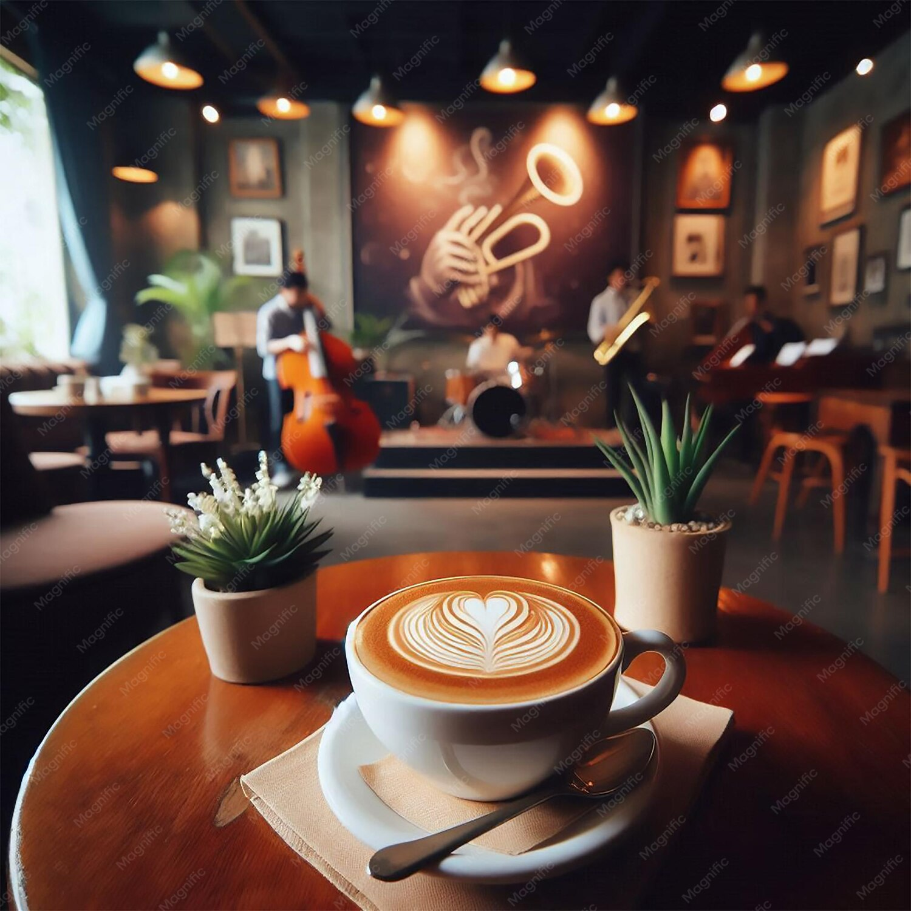

Coffee is more than just a morning beverage; it is a universal ritual, a comfort, and a driving force for productivity. For millions, the day does not truly begin until the rich aroma of fresh grounds fills the air. It serves as a warm companion during quiet, early-morning reflections and acts as the ultimate catalyst for creative energy and social connection.Throughout history, writers, artists, and leaders have leaned on this beloved brew to spark inspiration. As Jerry Seinfeld famously noted, coffee solves the collective exhaustion and mild depression of the daily grind in "one delightful little cup." It acts as a language of its own, bridging cultures and bringing people together over steaming mugs in cozy cafés. Whether you rely on a bold espresso shot to fuel a demanding workday, or prefer a slow, comforting latte on a rainy afternoon, coffee provides a reliable moment of peace in a fast-paced world. It turns the simple act of waking up into something to look forward to. Ultimately, humanity runs on this dark, rich nectar, proving that behind almost every great idea, successful project, or vibrant morning conversation, there is a substantial, indispensable amount of coffee.
